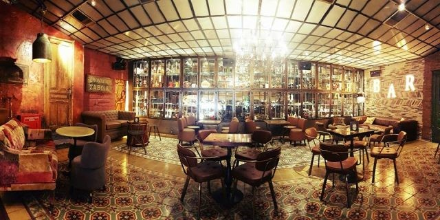

1.Couleur Locale
Η νέα άφιξη στο Μοναστηράκι μας κέρδισε με την χαλαρή της διάθεση,
την μεγάλη της ταράτσα και
την θέα που «πιάνει» όχι μόνο την Ακρόπολη αλλά ολόκληρη την ανηφορική διαδρομή που οδηγεί
στον Παρθενώνα.
2.Dolce Café
Είναι ένα από τα κλασικότερα φοιτητικά στέκια της περιοχής και σας περιμένει να το επισκεφτείτε
μέσα σ’ ένα χουχουλιάρικο περιβάλλον, με φιλική ατμόσφαιρα και ξεχωριστή διακόσμηση.
Επιλέξτε το από νωρίς το πρωί για καφεδάκι, μέχρι αργά το βράδυ για ποτό και δυνατή ρoκ μουσική.

Γρηγορίου Αυξεντίου 58-60, Άνω Ιλίσια
3.Ιπποπόταμος
Κάθε εβδομάδα που περνάει, όλο και περισσότερα κορίτσια και αγόρια θα δίνουν τα ραντεβού τους
στο νέο μπαράκι της πόλης που διψάει για ροκιές και έχει παράξενο όνομα. Ο Ιπποπόταμος ροκάρει
στα σύνορα Εξάρχεια-Κολωνάκι, μα δεν τον νοιάζουν οι φυλές της Αθήνας, δεν τον νοιάζουν τα στερεότυπα,
δεν τον νοιάζει τίποτα άλλο πέρα από το να παίζει μουσική. Έτσι γίνεται στέκι και τα χρόνια περνούν.